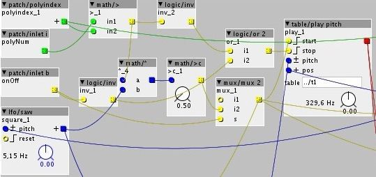

Is there a way to select how many poly instances are active? Let's say I have a patcher with 16 voices, something that would able to select from 1 to 16 voices?
No midi input involved, just audio...
Mute some poly voices?
nicotep
#1
Editing each voice individually
Probably not understanding your question. When you have a polyphonic subpatch, there is a selector for the number of voices on it. If you're asking to change that while the patch is running, i don't think that's possible.
You can do stuff like this using the poly index object, and some maths objects to gate a VCA.
Something like this maybe (I can't test at the moment):
{kind=link}
lokki
#4
not sure if this is what the OP wants, just to chime in here. it is not possible to adjust the number of voices when a patch is running and profit from any CPU savings.
nicotep
#5
Works fine ! Thanks.
Haha it would have taken me a week to find this solution... I still don't have the axoloti reflex.
nicotep
#6
Yes it is. I needed it as an easy way to multiply grains in a patcher. From 1 to 12, the CPU difference is 12%, though that wasn't aimed at saving CPU.
lokki
#7
but @MattilynMattroe solution should not save any cycles, since the voices are still running, albeit silent or am i missing something? if you adjust the poly voices it will of course save CPU but that feature is not available when a patch is running since number of voices is compiled into the binary.
I don't think it's about cpu at all in this case, simply about choosing how many voices are audible while the patch is running.
You're quite right, it wouldn't save cpu.
nicotep
#9
Well in my case, which is table/play (based on jt's grainy-table), I merely tell the unselected voices to stop to save this cpu.
